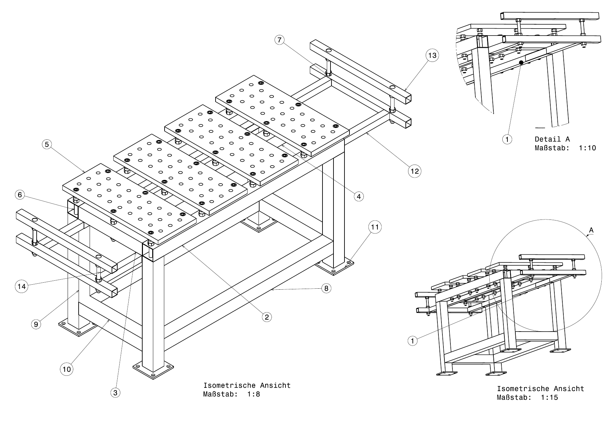

1 · Teilen-Nummern – Gesamtbaugruppe
Isometrische Ansicht, Maßstab 1:8 | Detail A 1:10 | Übersicht 1:15 · Positionsnummern 1–14.

Aufbauprinzip: Geschweißter Grundrahmen aus Vierkantrohr → darauf 4 verschraubte Lochplatten → seitlich Auslegerarme für Werkzeug/Klemmen.
| 1 | Verschraubung Unterseite (Detail A) |
| 2 | Längsträger Rahmen oben |
| 3 | Eckverbinder / Knotenblech |
| 4 | Tischplatte (rechts) |
| 5 | Tischplatte (links / außen) |
| 6 | Seitliche Aufnahme / Konsole |
| 7 | Auslegerarm oben (Anbau rechts) |
| 8 | Untere Längsstrebe (Rahmen unten) |
| 9 | Tischbein vorne links |
| 10 | Untere Querstrebe |
| 11 | Fußplatte 160 × 160 × 10 mm |
| 12 | Querträger Anbauseite |
| 13 | Ablage-/Klemmenleiste rechts |
| 14 | Ablage-/Klemmenleiste links |
2 · Platte – Tischplatte mit Lochraster
Vorderansicht 1:4 | Schnittansicht F–F 1:4.
| Merkmal | Wert | Anmerkung |
|---|---|---|
| Länge | 750 mm | Außenmaß |
| Breite | 300 mm | Außenmaß |
| Dicke | 30 mm | Schnitt F–F |
| Lochraster | 80 mm | gleichmäßig in Länge & Breite |
| Randabstand | 55 mm | oben & unten |
| Nutzbereich | 640 × 250 mm | Lochfeld |
| Bohrung Ø | Ø20 mm | Systemlöcher für Spannmittel |
| Senkung | 20 / 22 mm | an Befestigungspunkten |
| Lochabstand quer | 75 mm | vom Mittelloch aus |
3 · Tisch-Obere-Teile – Träger & Profile
Vorderansichten & Schnitte G–G, H–H, I–I, J–J · Maßstab 1:5.
| Teil | Länge | Profil | Bohrungen |
|---|---|---|---|
| Längsträger A (Schnitt G–G) | 1500 mm | 80 × 80 (Wand ~3 mm, außen 86) | Ø20 · Teilung 250 / 150 · Randabstand 25 |
| Längsträger B (Schnitt I–I) | 1330 mm | 80 × 80 | Ø20 · erste Bohrung 190 · Teilung 250 / 150 |
| Querträger (Schnitt H–H) | 500 mm | 80 × 80 | 1 × Ø20 bei 250 mm (mittig) |
| Leiste / Ausleger (Schnitt J–J) | 1500 mm | 40 × 40 (außen 44) | ohne Bohrbild in dieser Ansicht |
Merke: Zwei Profilgrößen → 80×80 für die tragende Struktur, 40×40 für die leichten Anbau-/Ablageleisten.
4 · Tisch-Unten-Teile – Beine, Streben & Fußplatte
Vorderansichten & Schnitte B–B, C–C, D–D, E–E · Maßstab 1:4.
| Teil | Maß | Profil / Schnitt | Funktion |
|---|---|---|---|
| Längsstrebe unten | 1328 mm | 80 × 80 (B–B) | Rahmen unten, Längsrichtung |
| Tischbein | 750 mm | 80 × 80 (C–C) | Standhöhe der Konstruktion |
| Querstrebe unten | 500 mm | 80 × 80 (D–D) | Rahmen unten, Querrichtung |
| Fußplatte | 160 × 160 × 10 mm | Blech (E–E) | 4 Bohrungen → Bodenverankerung |
Hinweis: Alle Vierkantrohre einheitlich 80 × 80 mm → ein Materialtyp, wenig Verschnitt, einfache Beschaffung.
Zusammenfassung der Konstruktion
📏 Grundfläche
Rahmen ca. 1500 × 500 mm, Plattenfeld 4 × (750 × 300).
📐 Höhe
Beine 750 + Rahmen 80 + Platte 30 → ca. 860 mm Arbeitshöhe.
🔩 Verbindung
Rahmen geschweißt, Platten verschraubt, Fußplatten gedübelt.
🧰 Erweiterung
Seitliche Ausleger (40×40) → Ablage für Klemmen & Werkzeug.